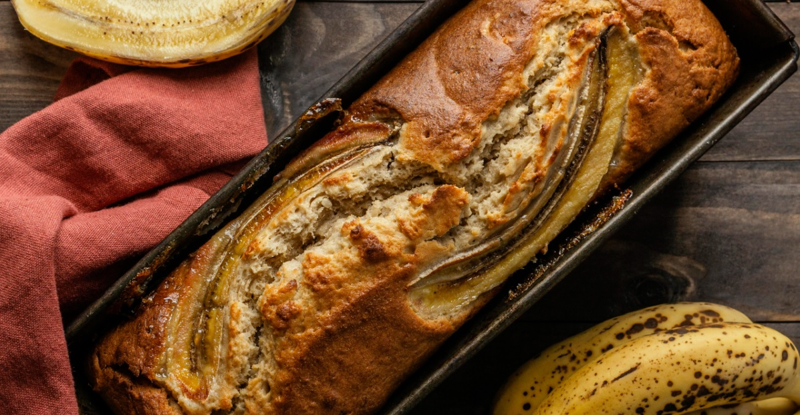
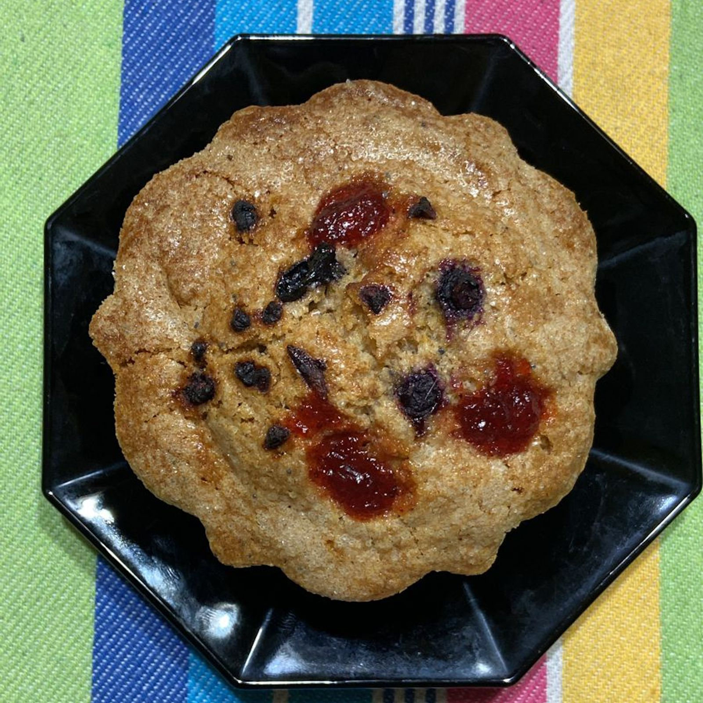
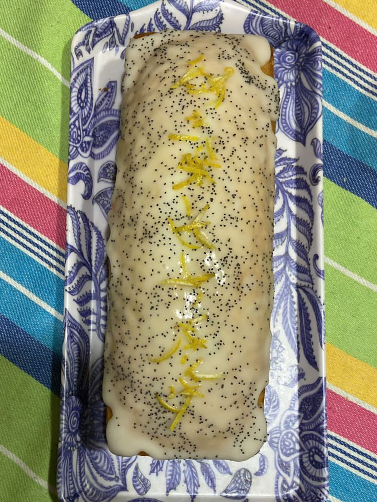
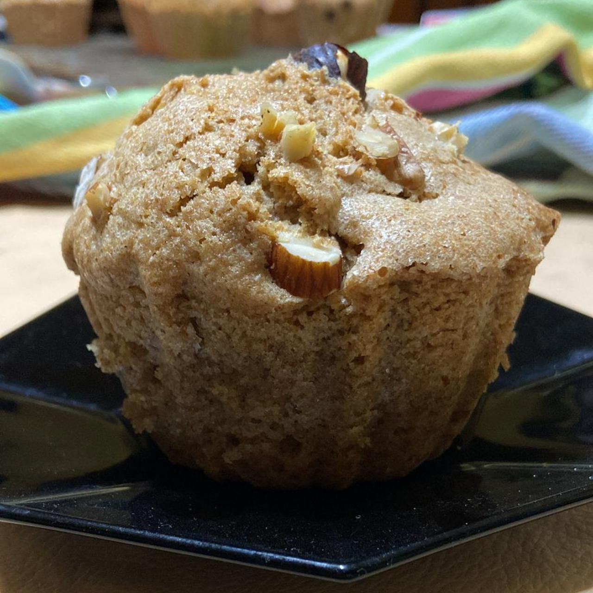
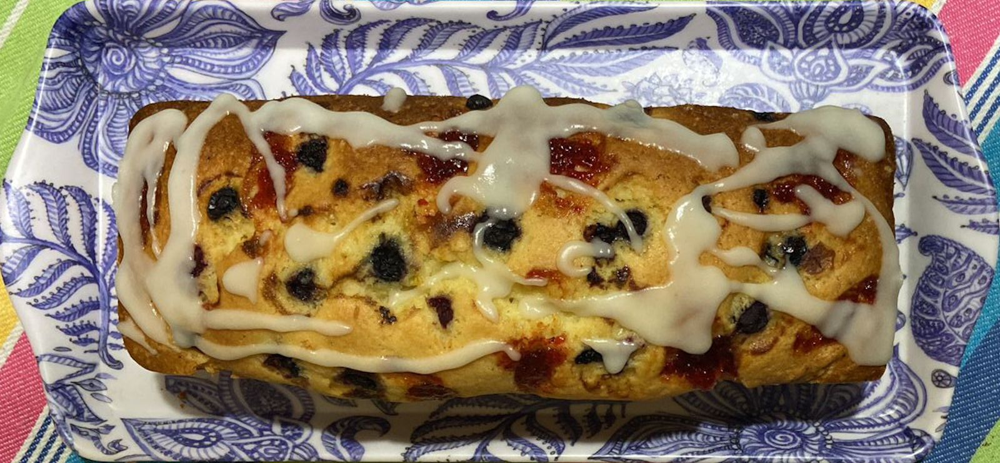

BIENVENIDOS/AS A HECHOENCASA.CB
Encontrá los budines más ricos de Rosario


Somos un emprendimiento de Rosario que comenzó en el 2020, nos dedicamos a hacer budines, muffins y cosas ricas sin conservantes, sin leche, sin manteca y con opciones integrales. Para ver nuestros budines, muffins y demas dirigíte a la sección productos.